Докладчик
- Николаева Ангелина Борисовна
- Студентка НКАбд-04-25
- Российский университет дружбы народов
- [1032253612@rudn.ru]

Обычно основное дерево проекта хранится в локальном или удалённом репозитории, к которому настроен доступ для участников проекта. При внесении изменений в содержание проекта система контроля версий позволяет их фиксировать, совмещать изменения, произведённые разными участниками проекта, производить откат к любой более ранней версии проекта, если это требуется. Изучим базовые возможности GitHub.
Установила git и gh (см. рис. 1).
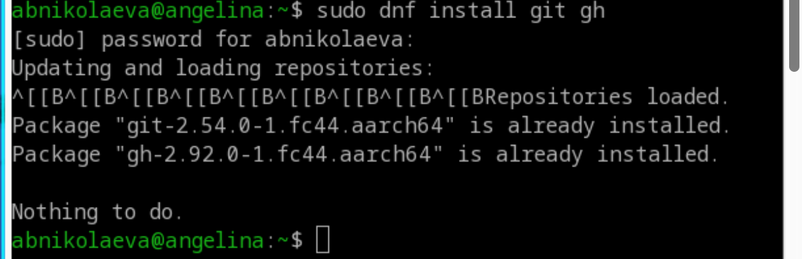
Задала имя и email владельца репозитория, задала имя начальной ветки, настроила autocrlf и safecrlf (см. рис. 2).
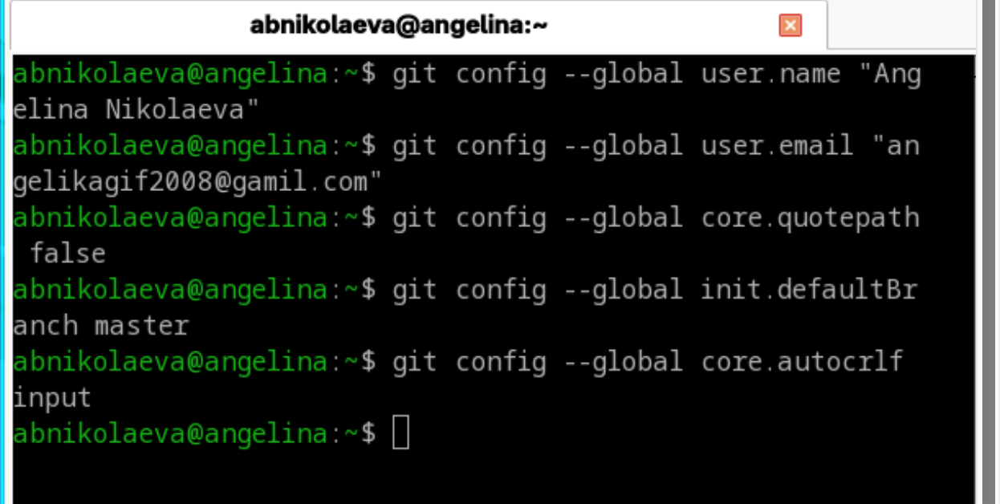
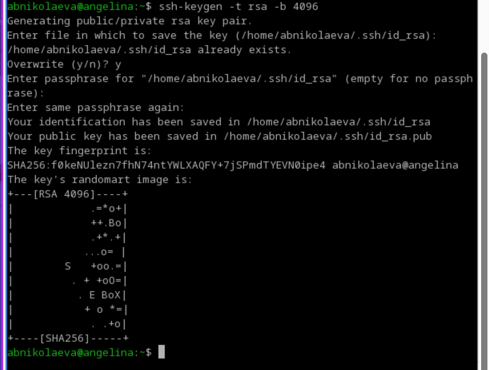
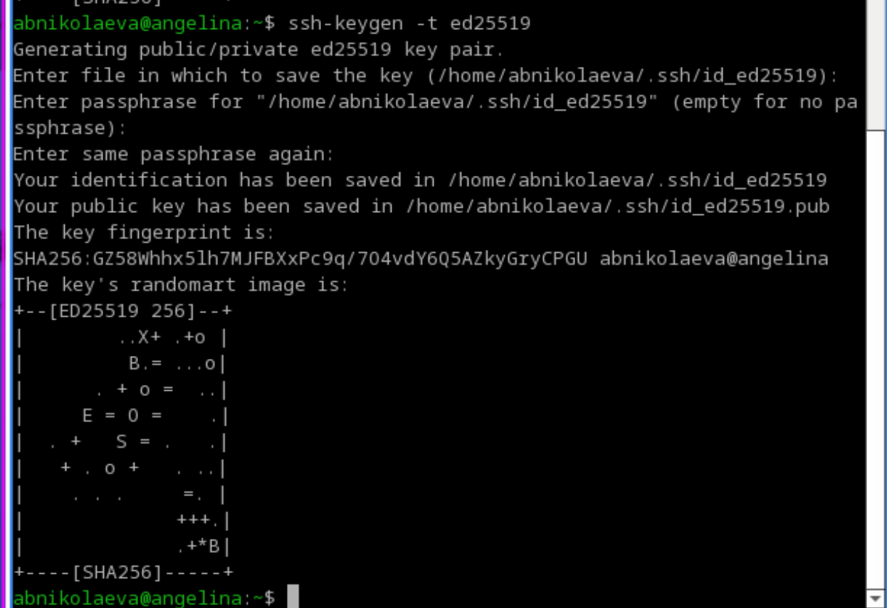
Создала ключ PGP (см. рис. 5).
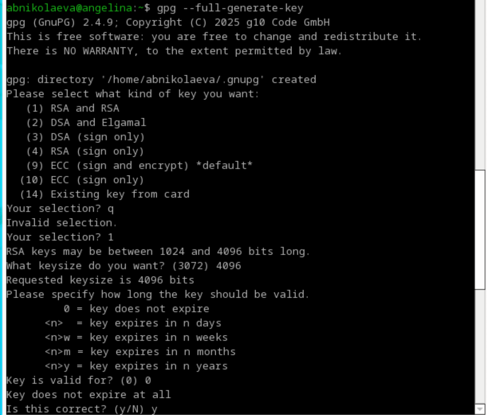
В моём случае учётная запись на GitHub с основными данными уже была создана (см. рис. 6).
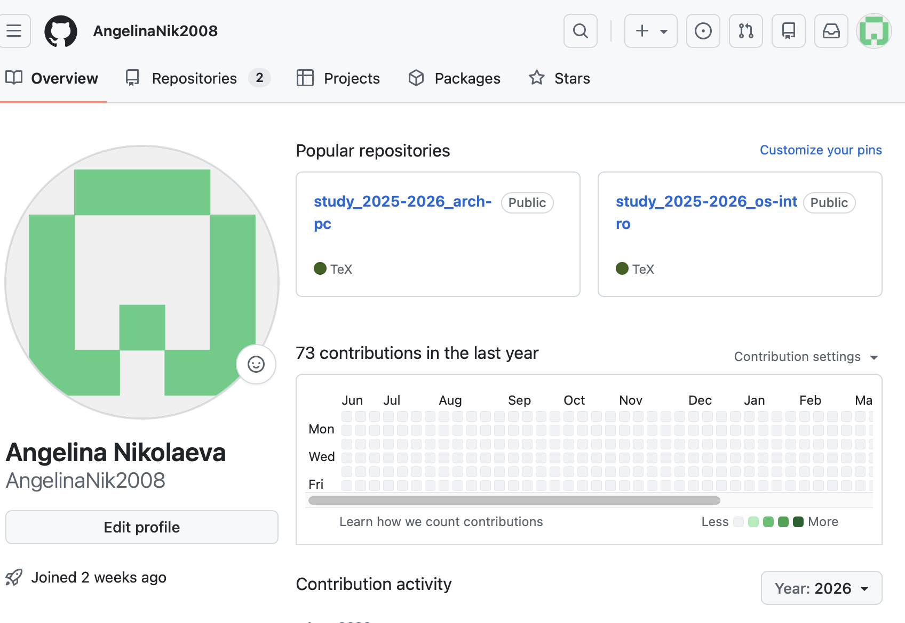
Вывела список ключей (см. рис. 7).
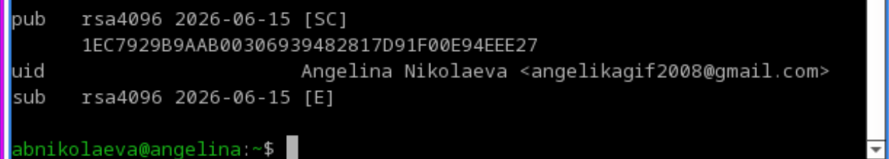
Перешла в настройки GitHub, нажала на кнопку New GPG key и вставила полученный ключ в поле ввода (см. рис. 8).
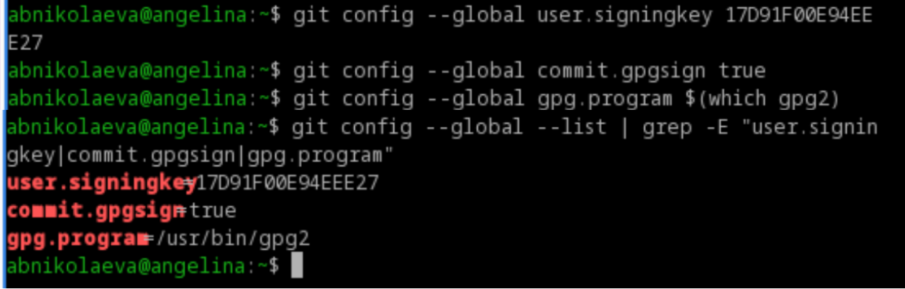
Используя введённый email, указала Git применять его при подписи коммитов (см. рис. 9).
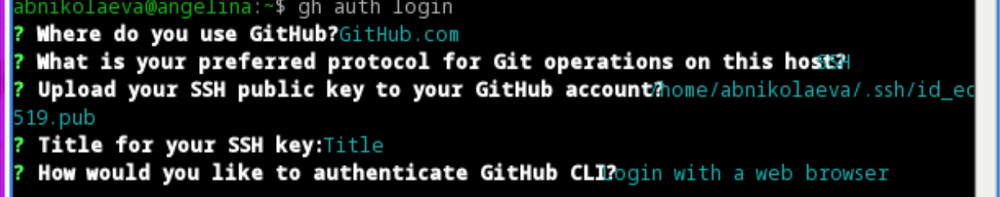
Авторизация gh auth login (см. рис.
10).
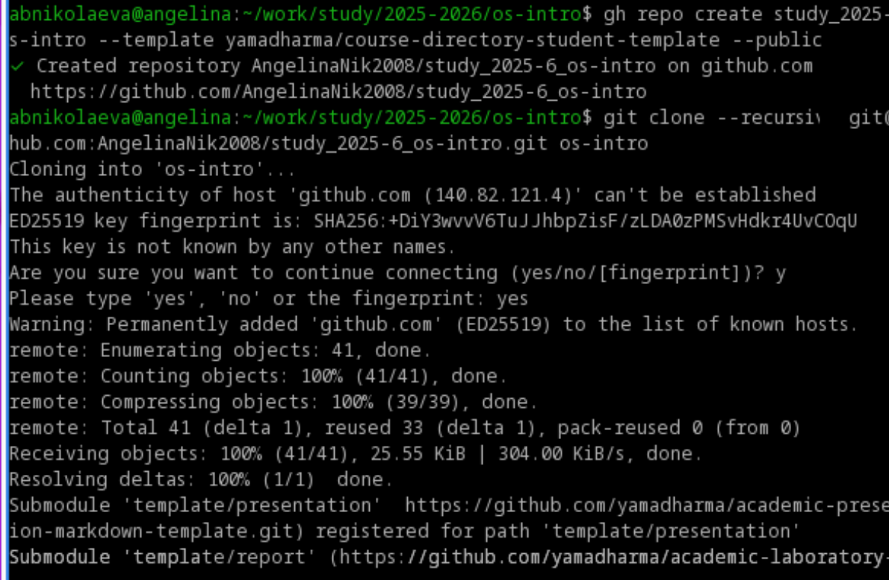
Создала репозиторий курса на основе шаблона (см. рис. 11).
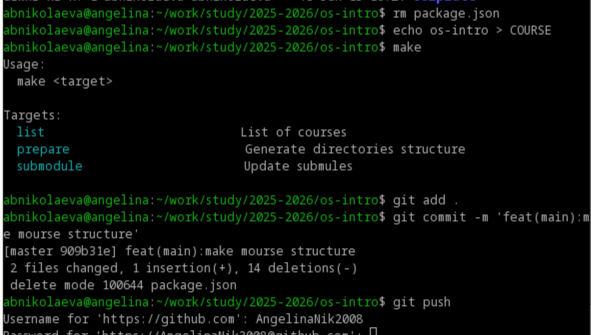
Перешла в каталог курса, удалила лишние файлы, создала необходимые каталоги и отправила данные на сервер (см. рис. 12).
В ходе данной лабораторной работы я изучила идеологию и применение средств контроля версий и освоила умения по работе с Git.